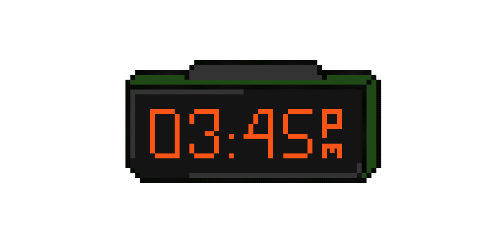
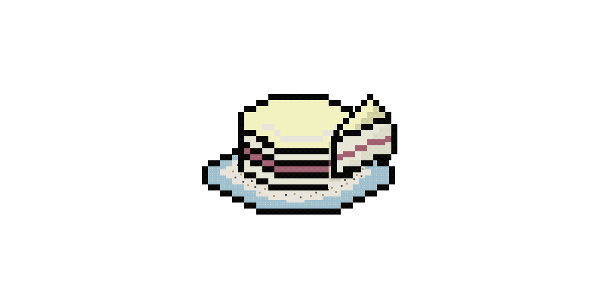
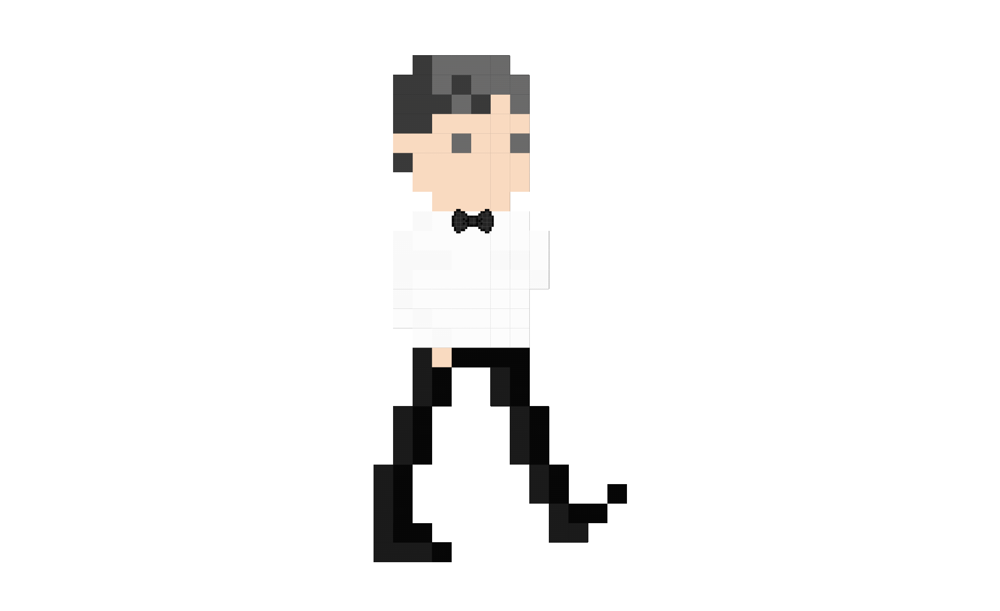

🙂 overview
My next project at the Chronicle was about the Good Good Culture Club restaurant. GGCC is a new restaurant that opened early this year in San Francisco. Following the pandemic, the owner wanted to reimagine restaurant industry standards and implemented an equity fee instead of tip, QR menus to allow employees to spend more time with the customers, and hiring practices that focused on the candidate rather than their experiences. With a major opportunity of multimedia and reporting, my manager wanted an interactive story that could introduce all the changes GGCC were making in a fun, imaginative way.
🙂 process
To start, I did research on GGCC to learn more about the restaurant's values and narrow down areas the story might want to highlight. Following, I looked at various stories across newsrooms to see how other publications visualized stories related to food and dining. I thought about gamifying the story, very reminiscent of the game Diner Dash, but also knew how important the aspect of the people of GGCC would be to the story focused on values and ethics.
After sketching a few ideas and sharing them with Alex, I decided on an idea that took inspiration from GGCC branding (their menus and colors), quirky game elements (pixel art GIFS) and multimedia s crollers. Since I was imagining varying scroll directions and animated elements, I began development with a basic template that would require more of a custom dev push on my end.

Initial Figma wireframes (Click to see all 4 ideas!)



🙂 outcome
The story is still in production and will be set to publish in late June once the reporting is complete! Before I completed my internship, I built out the majority of the story through the Chronicle's C2P system and coordinated all the pixel art gifs and image scrollers to show up each section. Each time section is its own spreadsheet, so the code calls upon what time is needed to show the necessary images and text blocks. The design actually went through quite a few changes as the reporter got farther in the writing process, so I learned firsthand how much of an iterative process design can become. Since my internship concluded before pub, I made sure to pass off all my work and walk through the code with the developer who would take over the project.